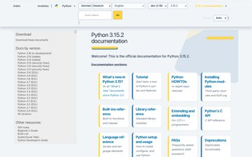
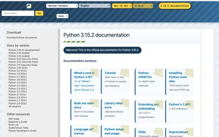

Evolve https://docs.python.org/3/ for Python developers, students, and contributors looking up language reference and guides: primary task 'Identify current version (3.15.2) and jump to the right doc section or search in under 3s', tone clear, technical, welcoming, utilitarian. Penalise any information or element present on the live page that is missing here. · design language saas
BEFORE · live site (full page, 1280 wide)

brain 0.753 · judge 0.67
Object-shape (LO) and motion (MT) areas are low: a text-first screen with no clear object silhouette
AFTER · round 0 (full page, 1280 wide)

brain 0.753 · judge 0.67
round 1 · brain said
“Object-shape (LO) and motion (MT) areas are low: a text-first screen with no clear object silhouette”
agent chose
typography — {"display": "Inter Tight", "body": "Inter", "scale": "48px",

brain +0.01 · judge -0.06 · rejected
round 1 · brain said
“Object-shape (LO) and motion (MT) areas are low: a text-first screen with no clear object silhouette”
agent chose
reflow — {"move": "Keep all words; pin Quick search + Go | modules | index + 3.15.2 selector into sticky top bar,
brain +0.01 · judge -0.06 · rejected
round 2 · brain said
“Object-shape (LO) and motion (MT) areas are low: a text-first screen with no clear object silhouette”
agent chose
photo —

brain +0.00 · judge -0.20 · rejected